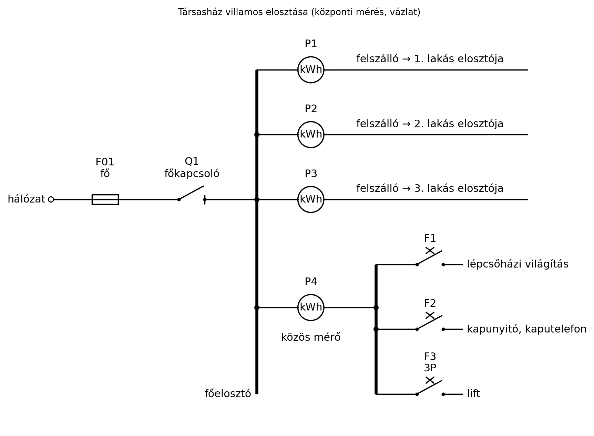

Statikus változat (mint a PDF-ben)
Lakásfelújításkor vagy új lakás kialakításakor a szerelőnek gyakran kell megterveznie vagy átalakítania a lakáselosztót. A régi olvadóbiztosítékos, esetleg védővezető nélküli táblák helyett ma már korszerű, moduláris készülékekből épített elosztókat kell készíteni. A lakáselosztó az épület villamos hálózatának az a pontja, ahol a mért, fogyasztói oldali energia szétosztása és védelme történik. Ha itt rossz a sorrend, hiányzik a megfelelő védelem, vagy a fázisok terhelése egyenlőtlen, az áramütéshez, tűzhöz, kényelmetlen üzemzavarokhoz vezethet. Ezért ebben az alfejezetben a lakás- és épületelosztó felépítését tanuljuk meg: milyen részekből áll, milyen sorrendben követik egymást a készülékek, és hogyan alakítjuk ki a védő- és nullavezető sínrendszerét.
A lakáselosztó (gyakran „lakáselosztó szekrény”, „biztosítéktábla”) egy olyan tokozott elosztóberendezés, amely a mérőhely felől érkező táplálást fogadja, és azt az egyes fogyasztói áramkörök felé szétosztja, miközben védelmet biztosít túláram, hibaáram és gyakran túlfeszültség ellen.
Definíció. A lakáselosztó olyan kisfeszültségű elosztóberendezés, amely a mérőhely után, a fogyasztói oldalon helyezkedik el, és tartalmazza a főkapcsolót, a védelmi készülékeket, valamint a vezetők csatlakoztatására szolgáló sínrendszereket.
Az elosztó fizikai felépítése moduláris elven működik: a készülékeket szabványos, 35 mm széles, kalapsín alakú fémprofilra, az úgynevezett DIN-sínre pattintják. A moduláris készülékek szélességét modulban adják meg (1 modul ≈ 17,5 mm, ellenőrizendő: a gyártói adatlap szerint). A DIN-sín a szekrény hátlapjára van rögzítve, és lehetővé teszi a készülékek gyors cseréjét.
Az alábbi ábra bal oldala a TS 35 kalapsín metszetét mutatja: a 27 mm-es talpát csavarozzák a szerelőlapra, a 35 mm széles peremek 7,5 mm-rel (a mélyebb változatnál 15 mm-rel) állnak ki, és ezekre pattannak a készülékek. A jobb oldalon a modulszélességek láthatók: az egypólusú kismegszakító 1 modul (≈ 17,5 mm), a kétpólusú FI-relé jellemzően 2, a háromfázisú kismegszakító 3 (≈ 52,5 mm), a négypólusú FI-relé 4 modul (≈ 70 mm).
Az elosztó méretezésekor a modulokat számoljuk össze (a tartalékhellyel együtt), és ehhez választunk sorszámot és sorhosszt. A sín méretei az MSZ EN 60715, a készülékszélességek a gyártói adatlap szerint ellenőrizendők (ellenőrizendő). A HTML-kiadásban a részekre mutatva olvasható a méretük.
Szabvány. A kisfeszültségű elosztóberendezésekre az MSZ EN 61439 szabvány vonatkozik (ellenőrizendő: pontos kiadás és szakasz). Az elosztószekrény védettségét az IP-kód szerint kell megválasztani (MSZ EN 60529), lakásban jellemzően IP40 vagy IP41 (ellenőrizendő: a beépítési hely szerint).
Az elosztószekrény anyaga általában szigetelő műanyag vagy fém. A műanyag szekrények könnyűek és nem igényelnek külön védőföldelést, de a fém szekrényeket mindig be kell kötni a PE-sínre. A védettség azt mutatja, hogy a szekrény mennyire véd a szilárd tárgyak és a víz behatolása ellen; beltéri lakáselosztóknál jellemzően IP40 (1 mm-nél nagyobb tárgyak ellen védett, víz ellen nem) elegendő, nedves helyiségben IP44 vagy magasabb kell (ellenőrizendő: a környezet és a szabvány szerint).
A lakáselosztóban a készülékek sorrendje nem esetleges, hanem a védelem logikáját követi. Egy tipikus sorrend a táplálás felől a fogyasztók felé haladva:
Szabály. A főkapcsolónak a fázisvezetőket le kell tudnia választani; az N-vezető bontásának szükségessége a hálózati rendszertől függ (TT-ben szükséges, TN-S-ben nem mindig kötelező, de ajánlott; ellenőrizendő: MSZ HD 60364-4-46/-5-53). A PEN-t soha nem szabad bontani. Lakásban a főkapcsoló jellemzően 40 A vagy 63 A névleges áramú, de a mérőhelyi főbiztosító értékéhez kell igazítani (ellenőrizendő: a hálózati engedélyes előírása).
A túlfeszültség-levezető (SPD) kiválasztása és bekötése a Túlfeszültség-védelmi eszközök (SPD): típusok és beépítés alfejezetben részletesen szerepel. Itt elegendő annyit tudni, hogy a lakáselosztóban általában 2. típusú (T2) levezetőt alkalmaznak, és a bekötése a lehető legrövidebb vezetékkel történjen, mert a hosszú vezeték rontja a védelmet.
Az áram-védőkapcsoló (FI) szerepe a hibavédelem és a kiegészítő védelem. Lakáselosztóban általában 30 mA kioldási érzékenységű FI-t használnak, mert ez védi az emberi életet közvetlen érintés esetén is. A FI nem véd túláram ellen, ezért túlterhelés ellen védeni kell: vagy az előtte lévő túláramvédelem (pl. a főbiztosító) névleges árama legfeljebb a FI névleges árama, vagy a FI-t a mögötte lévő áramkörök egyidejű terhelésére, a gyártói koordinációs adatok szerint méretezzük (ellenőrizendő: MSZ HD 60364-5-53 és gyártói adatlap). A kismegszakítók névleges áramainak puszta összege nem méretezési feltétel.
Hogyan néz ki mindez a szekrényben? Az alábbi ábra egy háromfázisú lakáselosztót mutat. A doboz (1) kitörhető bevezetőin érkezik a betápláló kábel, a két DIN-sínen (2) felül a Q1 főkapcsoló (3), a túlfeszültség-levezető (4) és a Q2 FI-relé (5) ül, alul a kismegszakítók (6). A FI kimenetéről a fésűs sín (7) osztja a fázist a kismegszakítókra L1–L2–L3 sorrendben; a főzőlap egyetlen háromfázisú kismegszakítót (12) kap, mellette tartalékhely (8) van vakfedéllel. Alul a szigetelt tartón ülő N-sín (9) és a PE-sín (10) látható, a fedlap (11) pedig csak a készülékek kezelőfelületét engedi ki, alatta feliratsávval.
A rajzon az SPD bekötése az egyszerűség kedvéért nem látszik; a valóságban a főkapcsoló után, a lehető legrövidebb vezetékkel kötjük a fázisokra és a PE-sínre. A HTML-kiadásban a fedlap és a vezetékek rétege kikapcsolható, a részekre mutatva pedig olvasható a szerepük.
A lakáselosztóban a nullavezetők és a védővezetők csatlakoztatása sínrendszerrel történik. Ezek a sínek általában a szekrény alján vagy oldalán helyezkednek el, és csavaros kapcsokkal fogadják a vezetékeket.
PE-sín: A védővezető (PE) sín fémből készül, és közvetlenül, nagy keresztmetszetű vezetővel csatlakozik a bejövő PE vezetőhöz. A szekrény fém részeit, a DIN-sínt (ha fém), valamint minden védővezetőt ehhez a sínhez kell kötni. A PE-sín a szekrényben nem szakaszolható, és nem köthető össze a N-sínnel a FI után. A védővezető keresztmetszete azonos anyag esetén 16 mm²-ig a fázisvezetőével megegyező, felette a szabvány táblázata vagy számítás szerint kisebb is lehet (ellenőrizendő: MSZ HD 60364-5-54 aktuális táblázata).
N-sín: A nullavezető sínje szigetelten van rögzítve, mert a nullavezető aktív vezető, és üzemszerűen áram folyik rajta. Ha a FI előtt és után is vannak nullavezető csatlakozások, akkor a FI előtti és utáni N-szakaszokat szigorúan el kell különíteni, különben az üzemi áram egy része a FI mellett kerüli meg az áramváltót, és a FI téves kioldást vagy érzékenységvesztést mutat. A FI után a N-sín nem köthető össze a PE-sínnel, mert az üzemi áram egy része a PE-n térne vissza, ami differenciaáramot okozna.
Ha az elosztóban két FI-csoport van, mindegyiknek saját N-sínje van, és egy áramkör nullája csak annak a FI-nek az N-sínjére kerülhet, amelyik után a kismegszakítója ül. Az alábbi ábra bal oldalán az F2 kör (a Q2 csoportban) helyesen az N1 sínre csatlakozik. A jobb oldalon a nullát tévesen a Q3 csoport N2 sínjére kötötték: a kör árama így a Q2-n befelé, a Q3-on visszafelé folyik, mindkét FI különbözeti áramot érzékel, és terheléskor mindkettő kiold.
Hibakereséskor ez a hiba arról ismerhető fel, hogy egy kör bekapcsolásakor egy másik csoport FI-je is kiold. A HTML-kiadásban a helyes és a hibás változat külön nézetben hasonlítható össze.
Egyenpotenciálra hozás (EPH): A lakáselosztóban a PE-sínhez csatlakozik a fő egyenpotenciálra hozó vezető, amely a víz-, gáz- és fűtéscsövek, valamint a fém szerkezetek felé megy. Ez a Földelés és egyenpotenciálra hozás fejezetben részletesen szerepel. A lényeg: az elosztó a védővezető-rendszer központi pontja, ahonnan az EPH elindul.
Háromfázisú lakáscsatlakozásnál az egyes fogyasztói áramköröket úgy kell elosztani az L1, L2, L3 fázisok között, hogy a fázisok terhelése közel azonos legyen. Ez csökkenti a nullavezető áramát, javítja a feszültség-szimmetriát, és megakadályozza, hogy egy fázis túlterhelődjön, míg a másik kihasználatlan marad.
A terheléselosztásnál a nagyobb fogyasztókat (mosógép, mosogatógép, sütő, bojler, klíma) lehetőleg külön fázisra kell tenni, a világítási áramköröket pedig egyenletesen elosztani. A háromfázisú bekötésű főzőlap zónái a három fázis között oszlanak meg, ezért a terhelése fázisonként eltérhet attól függően, mely zónák működnek; a bekötést a gyártói utasítás határozza meg (egyes típusok kétfázisúak).
Szabály. A fázisonkénti egyidejű áram nem haladhatja meg a fázisvezető terhelhetőségét, és a főbiztosító névleges áramát. A terheléselosztást a tervezéskor úgy kell elvégezni, hogy a legnagyobb fázisáram és a legkisebb fázisáram közötti eltérés lehetőleg 20%-on belül maradjon (ellenőrizendő: a tervezési gyakorlatban ajánlott érték).
Az elosztóban célszerű tartalékhelyet hagyni a későbbi bővítésekhez. A gyakorlatban legalább 20-30% szabad modulhelyet szokás fenntartani (ellenőrizendő: az adott projekt igénye szerint). Ez lehetővé teszi új áramkörök, például klíma, napelem vagy elektromosautó-töltő későbbi beépítését anélkül, hogy az egész elosztót ki kellene cserélni.
Egyfázisú elosztó. Régebbi és kisebb lakásokban gyakori az egyfázisú csatlakozás (például 1×32 A). A felépítés logikája ugyanaz, a készülékek kétpólusúak:

A háromfázisú elosztóhoz képest nincs fázisegyensúly, és a teljes terhelés egyetlen fázison, illetve egyetlen nullavezetőn folyik. A felső határ : egy 7,2 kW-os főzőlap mellett gyakorlatilag nem marad tartalék, ezért nagy fogyasztóknál teljesítménykorlátozás vagy háromfázisú bővítés kell (ellenőrizendő: a hálózati engedélyes feltételei).
Épületelosztó társasházban. A táplálás útja: hálózati csatlakozás → épület-főkapcsoló és főelosztó → mérőhelyek (földszinti központi mérőszekrény vagy szintenkénti mérőhelyek) → felszálló vezeték, illetve lakásonkénti mért fővezeték → lakáselosztók. Központi mérésnél a mérő után minden lakáshoz külön vezeték megy fel; szintenkénti mérőknél a közös, méretlen felszálló vezetékről ágaznak le a mérőhelyek.

A közös fogyasztás saját mérőn és saját elosztón van; tipikus körei:
Ki mihez nyúlhat? A főelosztó és a felszálló vezeték közös tulajdon: munkát csak a közös képviselő (a társasház) megbízása alapján végezhet jogosult szerelő; a méretlen szakaszhoz és a plombált mérőhelyhez a hálózati engedélyes hozzájárulása is szükséges. A lakáselosztó és a mögötte lévő hálózat a lakás tulajdonosáé (ellenőrizendő: a társasházi alapító okirat, a hálózati engedélyes üzletszabályzata).
Egy családi házban az elosztás lánc: mérőhely → fővezeték → lakáselosztó → körök, és ha melléképület is van, egy leágazás az alelosztóig. Az alábbi egyvonalas rajz ezt a láncot mutatja a Mintaházon (Mintaház és Kisüzem függelék): a telekhatári mérőhelytől az 5×10 mm²-es fővezetéken a +E1 lakáselosztóig, onnan az F15 leágazáson a kerti műhely +E2 alelosztójáig.
![Családi ház fő- és alelosztós egyvonalas rajza (Mintaház) - Egyvonalas rajz (tanulási példa, Mintaház): mérőhely F01 3×32 A gG főbiztosítóval és P1 mérővel → 5×10 mm²-es fővezeték (a PEN a mérőhelyen szétválik N-re és PE-re) → +E1 lakáselosztó (Q1 főkapcsoló, F0 SPD, Q2 és Q3 FI-csoport a körökkel) → F15 3P C25 leágazás NYY-J 5×6 kábelen a +E2 kerti műhely alelosztójába (Q10 főkapcsoló, Q13 FI, F21–F24). A teljes többvonalas rajz: ve061-4. Ellenőrizendő: a hálózati engedélyes előírásai, MSZ HD 60364-4-41, -5-52.](assets/ve061-diagram-3.png)
Kövesd végig a rajzon a kerti műhely egy aljzatkörének (F21) védelmi láncát: F01 → Q1 → F15 C25 → Q10 → Q13 → F21 C16. Minden szinten a táplálás felőli védelem a nagyobb, a vezetéket pedig mindig az előtte álló védelem védi: a W15 kábelt (NYY-J 5×6) az F15, az F21 kör vezetékét az F21. A szelektivitás (hiba esetén csak a hibához legközelebbi védelem kapcsoljon le) ennek a láncnak a beállításán múlik – részletesen a Szelektivitás, hátvédelem és megszakítóképesség alfejezetben. A Mintaház adatai tanulási példák: az F15 C25 és a földbe fektetett 5×6 mm²-es kábel terhelhetősége ellenőrizendő (MSZ HD 60364-5-52), és az F15 FI nélküli földkábel-szakasza is (MSZ HD 60364-4-41); a kerti műhelyben a Q13 FI ad 30 mA-es védelmet.
A kapcsolási vázlat egy lehetséges lakáselosztó felépítést mutat egyvonalas formában. A bejövő vonal négy vezetőt jelöl (L1, L2, L3, N; „/ 4”), mert a négypólusú főkapcsoló (Q1) és FI-relé (Q2) az N-et is kapcsolja, a FI pedig csak így érzékeli a differenciaáramot. A főkapcsoló után az F0 túlfeszültség-levezető (SPD) csatlakozik a fázisok és a PE-sín közé. Ezután a FI-relé következik; utána az N leágazik az N-sínre, a FI utáni fázisgyűjtőről pedig a kismegszakítók (F1, F2, F3) párhuzamos ágakon táplálják az egyes áramköröket. Az N-sín a FI után van, a PE-sín a bejövő PE-hez csatlakozik; a lakáselosztóban (TN-S szakasz) az N-sín és a PE-sín között nincs összekötés.
![Lakáselosztó egyvonalas kapcsolási vázlata - Egyvonalas vázlat: a bejövő vonal négy vezetőt visz (L1, L2, L3, N; „/ 4”), mert a Q1 főkapcsoló (4P) és a Q2 FI-relé (4P) az N-et is kapcsolja. Az F0 túlfeszültség-levezető (SPD) a fázisok és a PE-sín közé kapcsolódik; a FI után az N leágazik az N-sínre, a fázisgyűjtőről („/ 3”) az F1–F3 kismegszakítók párhuzamos ágakat táplálnak. A PE nem halad át a kapcsolókészülékeken; az N-sín és a PE-sín között nincs összekötés (TN-S szakasz). Szemléltető vázlat, nem kiviteli terv.](assets/ve061-diagram-4.png)
Az egyvonalas vázlat a felépítés logikáját mutatja, de a szerelő a dobozban vezetőket köt be: minden fázist, minden nullát és minden védővezetőt külön. Az alábbi többvonalas rajz a Mintaház +E1 lakáselosztóját mutatja teljes egészében, a Mintaház és Kisüzem függelék adataival; ez a könyv kanonikus elosztórajza, a 17.3 elrendezési rajza, feliratsávja és áramkörjegyzéke is erre épül. Balról jobbra követhető a táplálás: X0 bejövő kapcsok (PE, L1, L2, L3, N; 5×10 mm² a mérőhely felől) → Q1 főkapcsoló 4P 40 A → fő gyűjtősín (L1, L2, L3, N0) → F0 túlfeszültség-levezető (T2, 3+1 kapcsolás: három L–N varisztor és egy N–PE szikraköz) → a két FI-csoport (Q2 és Q3, 4P 40 A / 30 mA, A típus) a saját fésűs sínjével és saját N1, illetve N2 nullasínjével → a kismegszakítók → az X1 kimenő sorkapcsok → a W kábelek.
![Többvonalas rajz: az X0 kapcsokról a Q1 4P főkapcsolón át a fő gyűjtősínre (L1, L2, L3, N0); onnan az F0 SPD (3+1), a Q2 és a Q3 négypólusú FI, valamint az F15 és az F16 háromfázisú kismegszakító ágazik le. A Q2 után az F1, F3, F5, F7, F9, F11, F13, a Q3 után az F2, F4, F6, F8, F10, F12 (3P), F14 kör; minden kör nullája a saját FI-csoportjának N1 vagy N2 sínjéről, védővezetője a közös PE-sínről jut az X1:1–16 kapcsokra; alattuk a W1–W16 kábelek ér- és keresztmetszet-jelöléssel. A PE-sínen az alapföldelő, a fő EPH és a fém szekrény is.](figures/img/ve061-4.png)
A rajz körtáblája (a kapocsszám a rajz sorrendjét követi: előbb a Q2-, aztán a Q3-csoport, végül a FI nélküli két leágazás; a kábeljel a kör számát viszi):
| Kör | Védelem | Fázis | FI / N-sín | Kábel | Fogyasztó | Kapocs / kábel |
|---|---|---|---|---|---|---|
| F1 | B10 | L1 | Q2 / N1 | NYM-J 3×1,5 | Világítás 1 (előszoba, nappali, konyha, terasz) | X1:1 / W1 |
| F3 | B16 | L3 | Q2 / N1 | NYM-J 3×2,5 | Aljzatok: nappali, előszoba | X1:2 / W3 |
| F5 | B16 | L2 | Q2 / N1 | NYM-J 3×2,5 | Konyhai pult aljzatai | X1:3 / W5 |
| F7 | B16 | L3 | Q2 / N1 | NYM-J 3×2,5 | Mosogatógép | X1:4 / W7 |
| F9 | B16 | L2 | Q2 / N1 | NYM-J 3×2,5 | Fürdő/WC aljzatok + törölközőszárító | X1:5 / W9 |
| F11 | B16 | L1 | Q2 / N1 | NYM-J 3×2,5 | Sütő 3,5 kW | X1:6 / W11 |
| F13 | B16 | L2 | Q2 / N1 | NYM-J 3×2,5 | Klíma 0,9 kW (felvett) | X1:7 / W13 |
| F2 | B10 | L2 | Q3 / N2 | NYM-J 3×1,5 | Világítás 2 (hálók, fürdő, WC, közlekedő, kamra) | X1:8 / W2 |
| F4 | B16 | L1 | Q3 / N2 | NYM-J 3×2,5 | Aljzatok: hálószobák | X1:9 / W4 |
| F6 | B16 | L3 | Q3 / N2 | NYM-J 3×2,5 | Hűtő + páraelszívó | X1:10 / W6 |
| F8 | B16 | L1 | Q3 / N2 | NYM-J 3×2,5 | Mosógép 2,2 kW (változat: RCBO F típus) | X1:11 / W8 |
| F10 | B16 | L3 | Q3 / N2 | NYM-J 3×2,5 | Bojler 2 kW | X1:12 / W10 |
| F12 | 3P B16 | L1–L3 | Q3 / N2 | NYM-J 5×2,5 | Főzőlap 7,2 kW | X1:13 / W12 |
| F14 | B16 | L2 | Q3 / N2 | NYM-J 3×2,5 | Kültéri aljzat (terasz) | X1:14 / W14 |
| F15 | 3P C25 | L1–L3 | – / N0 | NYY-J 5×6 | Kerti műhely (+E2) leágazása, 30 m földben | X1:15 / W15 |
| F16 | 3P B16 | L1–L3 | – / N0 | NYM-J 5×2,5 | Napelem-inverter 4 kWp (háromfázisú) | X1:16 / W16 |
Három részletre figyelj a rajzon. Először: minden kör nullája annak a FI-nek az N-sínjéről indul, amelyik után a kismegszakítója ül (Q2 → N1, Q3 → N2); a FI nélküli F15 és F16 a FI előtti N0 sínről kapja a nullát. Az N0, az N1, az N2 és a PE-sín között nincs összekötés. Másodszor: a PE egyik kapcsolókészüléken sem halad át; a PE-sín a fő földelőkapocs, rajta az alapföldelő, a fő EPH-vezetők (víz, gáz, fűtés – lásd Földelés és egyenpotenciálra hozás) és a fém szekrény. Harmadszor: az F12 főzőlapkör és a két leágazás háromfázisú (3P) kismegszakítót kap, amely mindhárom fázist egyszerre bontja. Az F15 azért nincs FI mögött, mert a kerti műhely alelosztójában a Q13 FI véd (ellenőrizendő: a földkábel-szakasz védelme, MSZ HD 60364-4-41); az F16 inverterkör FI-típusát az inverter gyártója írja elő (ellenőrizendő).
Kiosztási elvek.
A HTML-kiadásban egy körre kattintva kiemelődik a teljes útja (fő sín, FI, fésűs sín, kismegszakító, N-sín, PE-sín, kapocs), a „FI-kioldás” gombok pedig kiszürkítik a lekapcsolt csoport köreit. Ellenőrzés: keresd meg a rajzon a mosogatógép körét, és mondd meg, melyik fázisról, melyik FI-n és melyik N-sínen át jut a mosogatógép aljzatáig a fázis és a nulla, melyik kapocsra és melyik kábelbe kerül (F7: L3 → Q2 → N1, X1:4, W7). Ha a Q2 kiold, melyik helyiségekben marad világítás, és melyikben marad működő aljzat?
Egy régi társasházi lakás felújításakor a szerelő azt tapasztalta, hogy a lakáselosztóban csak két olvadóbiztosíték volt: az egyik az összes aljzatot, a másik az összes világítást táplálta. Védővezető nem volt, a konnektorok kétvezetékesek voltak. A felújítás során teljesen új elosztót építettek be: a mérőhely után 5 erű kábel jött, a lakáselosztóba 40 A főkapcsoló, 40 A/30 mA FI, és 12 darab kismegszakító került. A fázisokat úgy osztották el, hogy a mosógép és a mosogatógép külön fázisra, a konyhai aljzatok a harmadik fázisra kerültek. A régi alumínium vezetékeket rézre cserélték, és minden aljzathoz védővezetőt húztak. Az új elosztóval a lakás biztonságos és bővíthető lett, és a FI-relé azonnal leoldott, amikor egy hibás kenyérpirítót csatlakoztattak – ez megmutatta a védelem működését.
A lakáselosztó tervezésekor az alábbi lépéseket követheted:
A háromfázisú, két FI-csoportos elosztó tanműhelyi megépítését a Lakáselosztó építése és bekötése alfejezet második fokozata vezeti végig.
| Megoldás | Modul | Relatív költség | Kioldáskor sötét | Mikor ajánlott |
|---|---|---|---|---|
| Egy közös FI | 2 vagy 4 | alacsony | minden kör | csak nagyon kis lakás, tudatos döntés |
| Két FI-csoport | 8 (2 × 4P) | közepes | a körök kb. fele | lakások általános megoldása |
| FI/LS (RCBO) körönként | körönként 2 | magas | csak a hibás kör | ahol a kiesés kritikus: hűtő, fagyveszélyes szivattyú, irodai gép |
| Vegyes: két FI és néhány RCBO | 8 + 2/RCBO | közepes–magas | a csoport vagy egy kör | általános lakás néhány kritikus körrel |
Három kérdés, ebben a sorrendben:
A FI típusa. Az AC típus csak a szinuszos váltakozó hibaáramot érzékeli, az A típus a lüktető egyenáramút is. A frekvenciaváltós vagy inverteres fogyasztók köre legalább A típusú FI-t igényel, a gyártó előírása szerint F vagy B típusút is – lásd Áram-védőkapcsoló (FI) és kiegészítő védelem (ellenőrizendő: a készülék gyártói előírása, MSZ HD 60364-5-53).
N és PE összekötése az elosztóban a FI után. Következmény: az üzemi áram egy része a PE-n tér vissza, a FI ezt hibaáramnak látja, és terheléskor kiold (nemkívánatos kioldás); kis terhelésnél nem old ki, de egy testzárlat hibaáramának egy része az N-en tér vissza, így a FI érzékenysége romlik, és a PE-n üzemi áram folyik. Helyes: a N és PE sínek a FI után szigorúan elkülönítve.
A főkapcsoló és az N-vezető bontása nincs tisztázva. Ha a főkapcsoló csak a fázisokat szakaszolja, az N-vezetőn munka közben is megjelenhet feszültség (pl. hibás N–PE összekötés vagy visszatáplálás esetén), ezért a munkavégzés előtt az öt biztonsági szabály szerint feszültségmentességet kell mérni. Az N bontásának szükségessége a rendszertől függ (TT-ben szükséges, TN-S-ben ajánlott); a PEN-t soha nem szabad bontani (ellenőrizendő: MSZ HD 60364-4-46/-5-53).
A fázisok egyenlőtlen terhelése. Ha az összes nagy fogyasztót ugyanarra a fázisra kötik, a fázisvezető túlterhelődhet, és a főbiztosító leoldhat, miközben a másik két fázis alig terhelt. Helyes: a terheléselosztás megtervezése.
A túlfeszültség-levezető hosszú vezetékkel bekötve. A hosszú bekötő vezeték induktivitása rontja a levezető védelmi szintjét. Az SPD bekötése a lehető legrövidebb legyen, a fázis és a PE közötti távolság minimális.
Tartalékhely hiánya. Ha nincs szabad modulhely, később a bővítés csak új elosztó beépítésével oldható meg, ami drága és bonyolult. Helyes: 20-30% szabad hely fenntartása.
Gyakorlás: ennek az alfejezetnek a kidolgozott példái, gyakorlatai és megoldással ellátott feladatai az Összefoglaló feladatgyűjtemény villanyszerelő tanulóknak című kötet 17.2 szakaszában találhatók.
A lakás- és épületelosztó a mérőhely után elhelyezkedő, moduláris készülékekből álló elosztóberendezés. Fő részei: bejövő kapcsok, főkapcsoló, túlfeszültség-levezető (SPD), áram-védőkapcsoló (FI), kismegszakítók, valamint a N- és PE-sín. A készülékek sorrendje a védelem logikáját követi: először a főkapcsoló, majd az SPD, utána a FI, végül a kismegszakítók. A N-sín szigetelt, a FI után nem köthető össze a PE-sínnel; a PE-sín közös, és az egyenpotenciálra hozás innen indul. A fázisok közötti terhelést kiegyenlítetten kell elosztani, és tartalékhelyet kell hagyni a bővítéshez. A tervezéskor a mérőhelyi főbiztosító értékéhez kell igazítani a főkapcsolót és a FI-t. Továbbvitt eredmény. Az itt megismert elosztófelépítést használjuk az Elosztó szerelése, kapcsolási rajz és feliratozás alfejezetben a bekötéshez, a Kismegszakítók és kioldási jelleggörbék alfejezetben a kismegszakítók kiválasztásához, valamint a Földelés és egyenpotenciálra hozás fejezetben a védelmi koncepció kialakításához. A legfontosabb képletek: a háromfázisú áram számításához, és a moduláris készülékek 35 mm-es DIN-sínre szerelése. A biztonsági szabály: a N és PE sínek a FI után szigorúan elkülönítve, és minden hálózati feszültségű munkát csak jogosult személy végezhet.